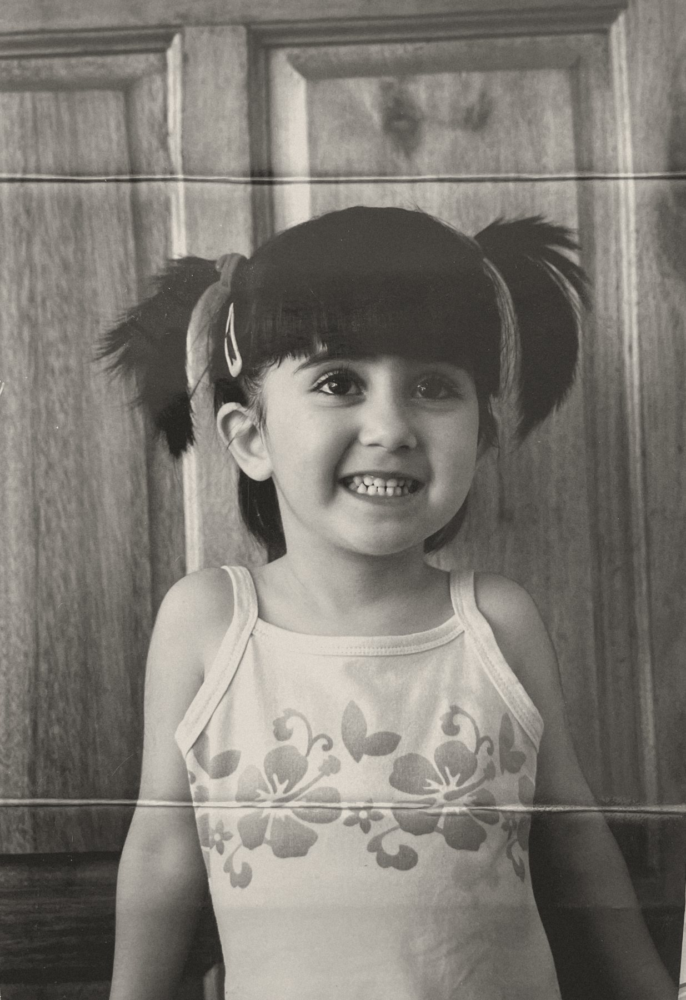

I like making things. Some are useful. Others exist purely because I thought they’d be funny.
Here’s a little bit of what I’ve made, what I’ve been up to, and things I love.

About
I studied biomedical science, then got a job in digital marketing and somehow ended up building software at a startup.
TwoWork & Play
Some things I’ve worked on, some things I’ve made for fun.
Three
Things I love
Piano, water parks, blind karaoke, and twenty-seven more.